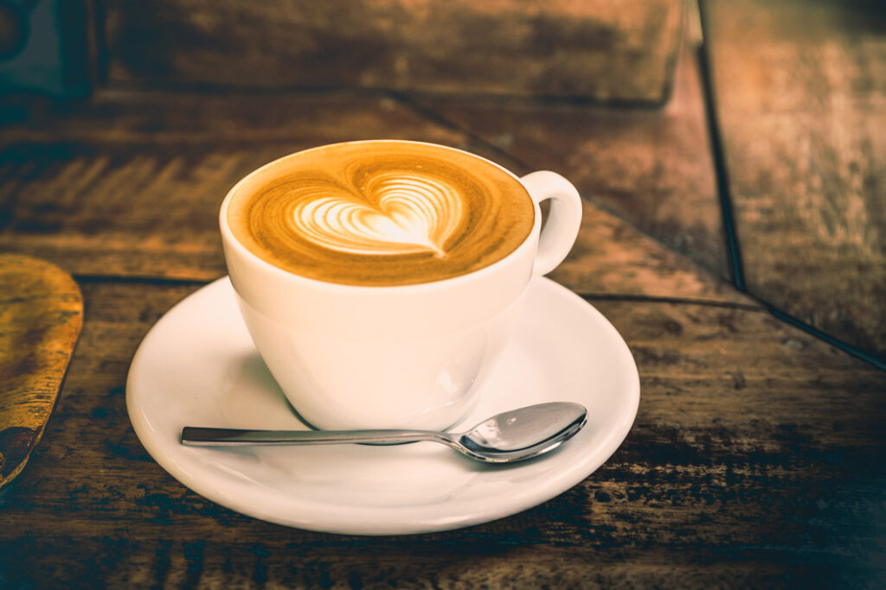
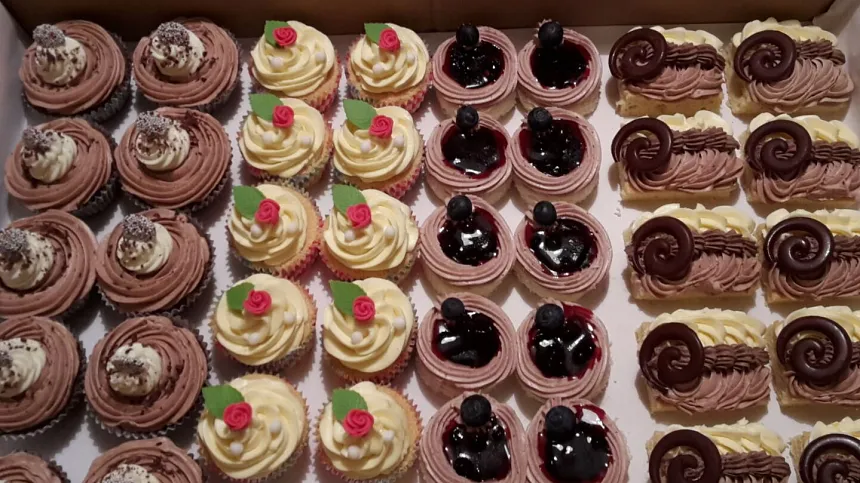

O nás
Kavárna Zrnko vznikla v roce 2019 z jednoduchého nápadu: dát lidem místo, kde se mohou na chvíli zastavit. Najdete nás v klidné uličce kousek od náměstí, kde se u nás potkávají studenti, sousedé i lidé na cestě do práce.
Všechno u nás děláme poctivě a v malém. Pečeme vlastní zákusky, vaříme domácí limonády a každý den vás obsloužíme s úsměvem.



Naše káva
Zrnka odebíráme od malých pražíren, které znají své pěstitele osobně. Každý týden vybíráme jednu novou kávu, takže se u nás nikdy nenudíte.
Espresso připravujeme z tmavěji pražené směsi. Filtrovanou kávu nabízíme ze světlejších zrn s ovocným tónem. Pokud si nevíte rady, rádi vám poradíme.



Menu


Kontakt
Kavárna Zrnko
Kavárenská 12, Ostrava
Telefon: 123 456 789
E-mail: ahoj@zrnko.example
Otevřeno máme od pondělí do pátku od 7:30 do 18:00, o víkendu od 9:00 do 17:00.